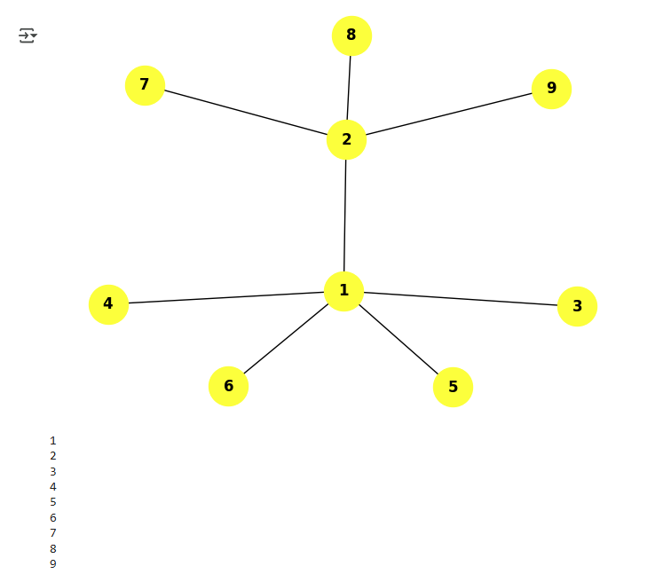
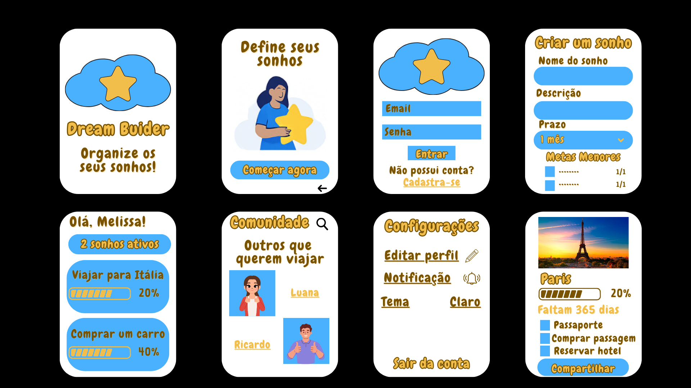
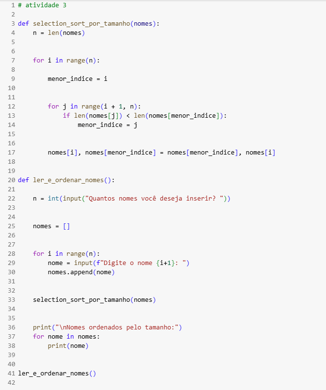

Projeto 1 - Implementação do BFS

Nesta atividade, implementamos o algoritmo de Busca em Largura (BFS) utilizando o Google Colab como ambiente de desenvolvimento. O BFS é uma técnica fundamental para percorrer grafos ou árvores, explorando os vértices nível por nível. No Colab, escrevemos uma função que recebe um grafo representado por listas de adjacência e um vértice inicial, retornando a ordem de visita dos nós. A utilização do Colab facilitou a execução, visualização e compartilhamento do código, além de permitir a integração rápida com outras bibliotecas Python para análise e visualização dos resultados.
Projeto 2 - Aplicativo Mobile Inovador

Desenvolvemos um aplicativo mobile inovador com o objetivo de oferecer uma solução prática e diferenciada para os usuários. Focamos em criar uma interface intuitiva e recursos que atendem necessidades atuais, como integração com inteligência artificial, personalização avançada e conectividade em tempo real. O projeto envolveu desde o planejamento da experiência do usuário até a implementação e testes, destacando a importância da inovação para se destacar no mercado de apps.
Projeto 3 - Algoritmos de Ordenação

Exploramos diferentes algoritmos de ordenação, como Bubble Sort, Insertion Sort e Quick Sort, utilizando o Google Colab como ambiente de programação. A proposta foi implementar cada algoritmo em Python, analisar seu funcionamento passo a passo e comparar seus desempenhos em diferentes conjuntos de dados. O uso do Colab facilitou a visualização do processo de ordenação, além de permitir a criação de gráficos para análise de eficiência, promovendo um aprendizado prático e interativo sobre estruturas e lógica de ordenação.